Georgia Group Tour
Tour Overview
Experience the essence of Georgia on this immersive 14-day journey through its diverse landscapes, rich cultural heritage, and renowned wine regions. Begin your adventure in Tbilisi, where old-world charm meets modern vibrancy. Travel through Georgia's historical heartlands, visiting ancient monasteries, medieval fortresses, and picturesque mountain villages. Explore the breathtaking Caucasus Mountains, marvel at stunning natural wonders, and discover centuries-old cave towns. Venture to the lush wine country of Kakheti, where traditional Georgian winemaking has flourished for over 8,000 years. Enjoy wine tastings at family-run wineries and experience the warmth of Georgian hospitality. From the Black Sea coast to UNESCO-listed landmarks and dramatic canyons, each day offers a new perspective on the country's rich history and stunning scenery. This tour blends cultural exploration, scenic landscapes, and authentic gastronomy, offering a perfect way to discover Georgia's most captivating sights. With a mix of guided excursions and free time, you'll experience the country at a comfortable pace, ensuring an unforgettable travel experience.
Tour Itinerary [+]
Day 1: Arrival in Tbilisi
[+]Arrive in Tbilisi. Meet your driver and head to your hotel to check in.
- Airport pick up and transfer to the hotel.
Day 2: Tbilisi city tour
[+]Lose yourself in the captivating charm of Tbilisi's Old Town – a fairytale setting of cobblestone streets and historic architecture. Imagine yourself soaking in therapeutic sulfur baths, the ancient secrets of the city swirling around you. Explore the vibrant Rustaveli Avenue, the heart of modern Tbilisi, and admire the architectural splendor of Freedom Square and the Peace Bridge. Conclude your day with a delightful dinner, savoring the authentic flavors of Georgian cuisine.
- Explore Old Town, Narikala Fortress, and sulfur baths;
- Visit Rustaveli Avenue, Freedom Square, and Peace Bridge;
- Dinner at a traditional Georgian restaurant;
- Overnight stay in Tbilisi.
Duration of the tour: 4-5 hours
Driving duration: 30 minutes
Day 3: Tbilisi – Jvari – Mtskheta – Ananuri – Kazbegi
[+]Step back in time to Mtskheta, a UNESCO World Heritage Site, then marvel at the stunning Ananuri fortress before arriving in breathtaking Kazbegi, nestled amidst majestic peaks. Prepare to be awestruck!
- Check out of the hotel in Tbilisi;
- Visit Jvari Monastery and Svetitskhoveli Cathedral in Mtskheta;
- Ananuri Architectural Complex;
- Zhinvali Reservoir;
- Lunch at a Georgian restaurant;
- Gudauri Friendship Monument (Gudauri Panorama);
- Overnight in Kazbegi.
- Duration of the tour: 9-10 hours
- Driving duration: 3.5 hours
Day 4: Kazbegi
[+]Conquer the trails leading to the iconic Gergeti Trinity Church, a masterpiece perched high in the mountains, with panoramic views that will steal your breath away. Feel the raw power of nature in the Gveleti waterfalls and the dramatic Dariali Gorge.
- Visit Gergeti Trinity Church;
- Gveleti waterfalls;
- Dariali Gorge.
- Duration of the tour: 6-7 hours
- Driving duration: 1 hour
Day 5: Kazbegi – Stalin Museum in Gori – Uplistsikhe - Tbilisi
[+]A Day of Contrasts – From Stalin's Legacy to Ancient Wonders. Experience a fascinating juxtaposition of history today, starting with a visit to the Stalin Museum in Gori. Reflect on the complex legacy of this controversial figure, before embarking on a journey to the utterly different world of Uplistsikhe, an ancient cave town etched into the landscape. This extraordinary site offers a breathtaking contrast to the museum, revealing the enduring spirit of Georgia's past. Conclude your day back in the bustling capital, Tbilisi, where ancient echoes blend seamlessly with modern life.
- Check out of the hotel in Kazbegi;
- Visit Stalin Museum in Gori;
- Uplistsikhe cave town;
- Overnight in Tbilisi.
- Duration of the tour: 9-10 hours
- Driving duration: 5 hours
Day 6: Tbilisi - Chiatura - Lunch at Lia - Katskhi pillar - Kutaisi
[+]Unique Georgia – From Cable Cars to Ancient Pillars. Today's journey takes you to Chiatura, where you'll experience a unique cable car ride offering breathtaking views. Enjoy a memorable family-style lunch at Lia, savoring the flavors of Georgia before witnessing the awe-inspiring Katskhi Pillar, a solitary rock formation standing tall through centuries. Finally, arrive in Kutaisi, get ready for a relaxing evening.
- Drive to Chiatura;
- Lunch at Georgian family;
- Visit Katskhi Pillar;
- Overnight stay in Kutaisi.
- Duration of the tour: 8-9 hours
- Driving duration: 3.5 hours
Day 7: Kutaisi – Prometheus cave – Martvili Canyon – Kutaisi
[+]Today's adventure takes you to two of Georgia's most stunning natural wonders. Begin by descending into the mesmerizing Prometheus Cave, a subterranean world of stalactites and stalagmites, where the earth reveals its hidden artistry. Afterward, journey to Martvili Canyon, where you'll traverse well-maintained trails, taking in the breathtaking views of this verdant gorge. Gaze up at the towering cliffs, breathe in the fresh mountain air, and let the serenity of the canyon wash over you. Return to Kutaisi.
- Visit Prometheus Cave Natural Monument;
- Martvili Canyon, boat trip;
- Free evening; Overnight stay in Kutaisi.
- Duration of the tour: 8-9 hours
- Driving duration: 2.5 hours
Day 8: Kutaisi – Baia's Winery – Batumi
[+]A Relaxing Journey to the Coast. Enjoy a relaxing start to the day with a visit to a local family winery. Savor the flavors of Georgian wine before embarking on a scenic journey towards the stunning coastal city of Batumi. Look forward to exploring Batumi's attractions. Overnight stay in Batumi.
- Check out of the hotel in Kutaisi;
- Lunch and wine tasting at Baia's Winery;
- Free evening; Overnight stay in Batumi.
- Duration of the tour: 7-8 hours
- Driving duration: 3.5 hours
Day 9: Batumi city tour - Batumi Botanical Garden, free evening
[+]Explore Batumi's captivating city center, admiring the architectural highlights of Europe Square, Piazza Square, and the iconic Ali and Nino Statue. Take a memorable cable car ride offering panoramic views, and explore the lush beauty of the Batumi Botanical Garden. Enjoy your free time soaking in the Batumi atmosphere.
- Visit Europe Square;
- Piazza Square;
- Ali and Nino Statue;
- Enjoy a cable car ride;
- Batumi Botanical Garden;
- Free evening in Batumi.
- Duration of the tour: 5-6 hours
- Driving duration: 1 hour
Day 10: Batumi – Tbilisi (train)
[+]Enjoy a relaxing morning in Batumi before checking out and boarding the evening train to Tbilisi. Enjoy a scenic journey through Georgia's diverse landscape.
- Check out of the hotel till noon;
- At 16:00, transfer to the train station. The train departs at 16:55 and arrives in Tbilisi at 22:15. Overnight stay in Tbilisi.
- Batumi-Tbilisi train: 5 hours
Day 11: Tbilisi – Telavi – Tsinandali – Lunch and wine tasting at the winery – Telavi
[+]Embark on a journey to the heart of Georgia's wine region, Kakheti. Explore the charming town of Telavi, visit the historic Tsinandali Estate, and indulge in a delightful lunch and wine tasting at a local winery.
- Drive to Telavi through the Gombori Pass;
- Visit Tsinandali Estate;
- Lunch and wine tasting at the winery;
- Dinner and overnight in Telavi.
- Duration of the tour: 8-9 hours
- Driving duration: 2.5 hours
Day 12: Telavi – Bodbe – Sighnaghi – Dinner and wine tasting at a winery – Tbilisi
[+]Explore more of Kakheti's treasures today, including the Bodbe Monastery and the picturesque town of Sighnaghi, known as the "City of Love." Enjoy a final dinner and wine tasting before returning to Tbilisi.
- Check out of the hotel in Telavi;
- Explore Telavi, including a visit to the monument of Erekle II and an excursion to the Telavi Historical Museum (Batonistsikhe);
- Visit Bodbe and explore Sighnaghi, the city of love;
- Enjoy dinner and wine tasting at a winery;
- Drive to Tbilisi for an overnight stay.
- Duration of the tour: 9-10 hours
- Driving duration: 4.5 hours
Day 13: Free day in Tbilisi
[+]Enjoy a leisurely day to explore Tbilisi at your own pace. Revisit your favorite spots, discover hidden gems, or simply relax and soak in the city's unique atmosphere.
- Enjoy a free leisure day in Tbilisi.
Day 14: Departure – Farewell Georgia
[+]After a final Georgian breakfast, it's time to depart from Tbilisi International Airport, taking with you unforgettable memories of your Georgian adventure.
- Check out of the hotel till noon. Transfer to Tbilisi International Airport.
Group Info
Accommodations
What's Included
- Accommodation in double or twin rooms, with breakfast included;
- Transfers as per itinerary by comfortable, air-conditioned vehicle throughout the tour;
- Guide service;
- Entrance fees as per itinerary;
- 13 breakfasts, 4 lunches, 3 dinners and 4 wine tastings;
- Batumi-Tbilisi train tickets;
- Still water.
What's Not Included
- Flight tickets;
- Full board;
- Additional hotel expenses;
- Travel insurance.
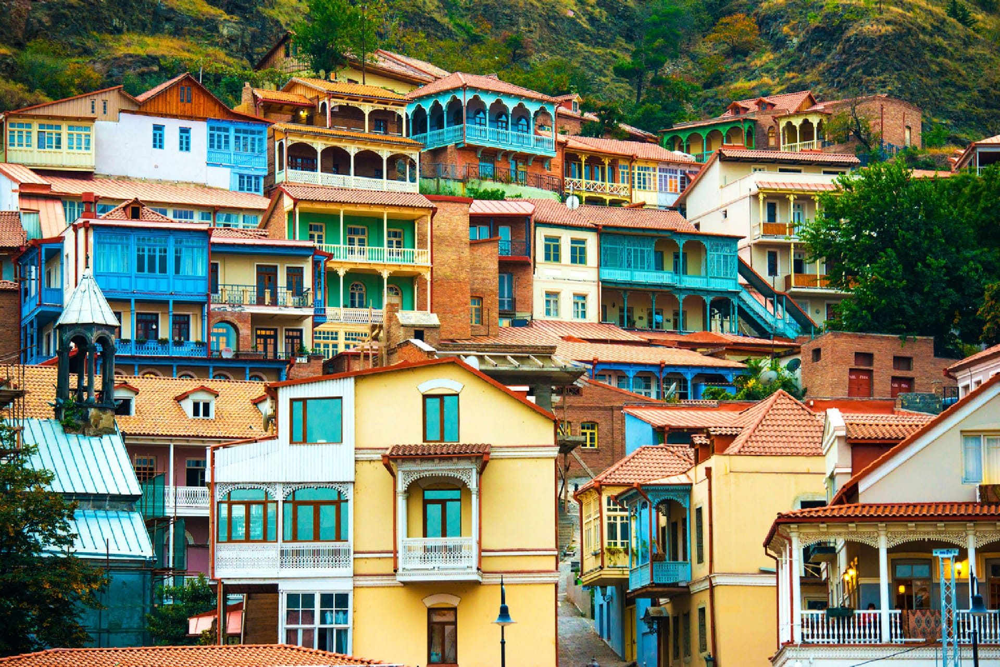
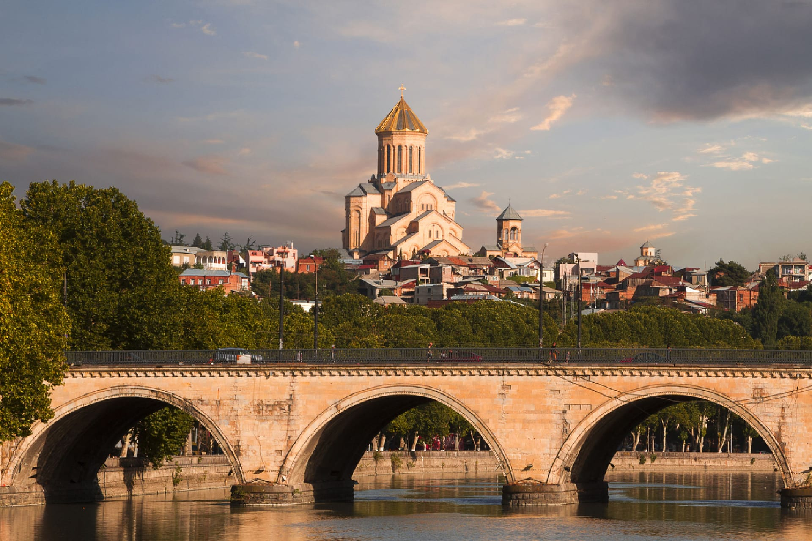
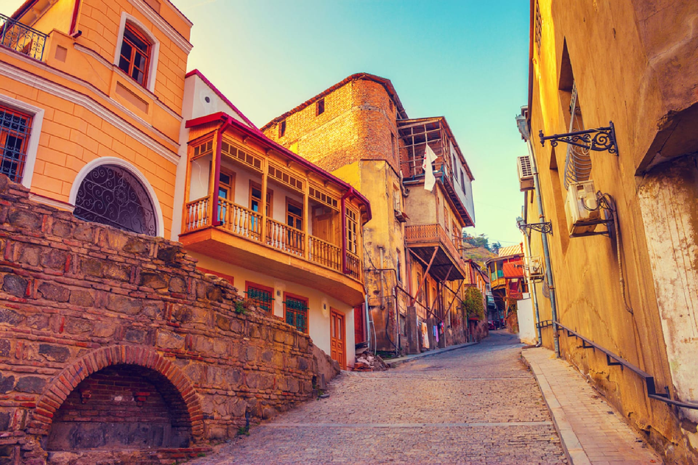
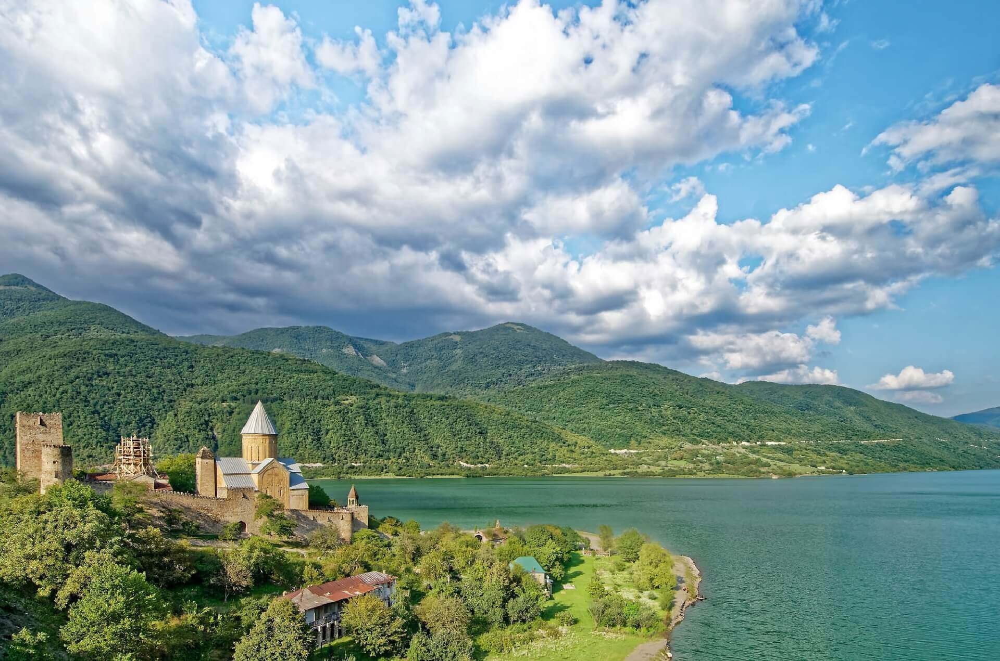
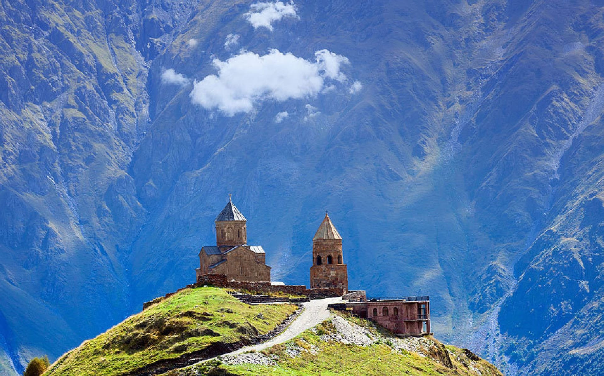
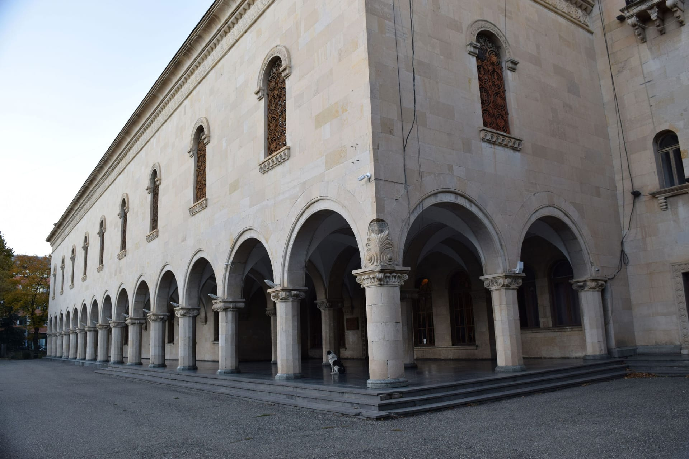
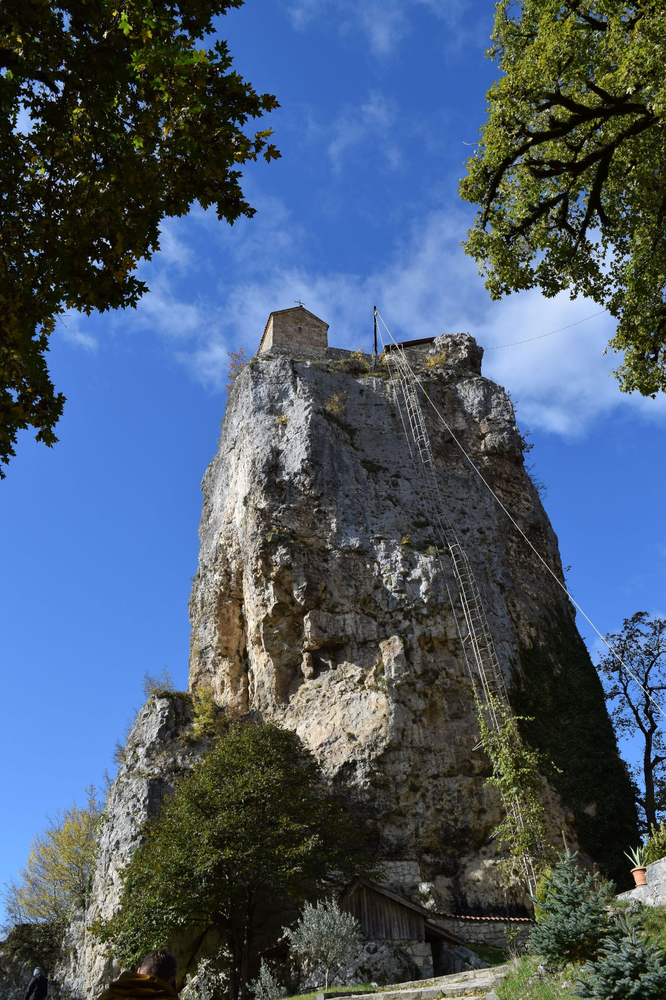
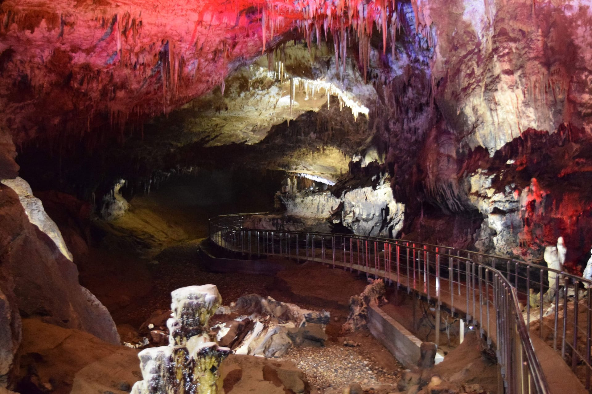
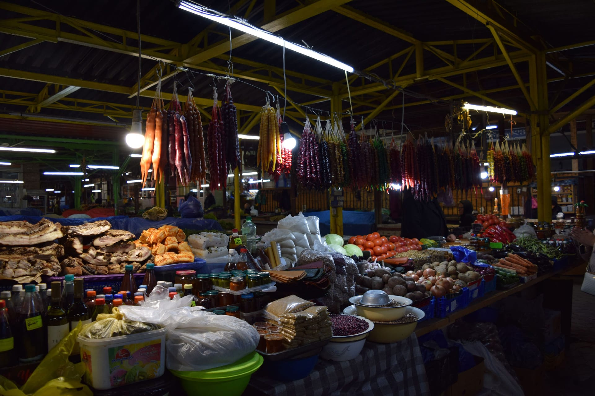
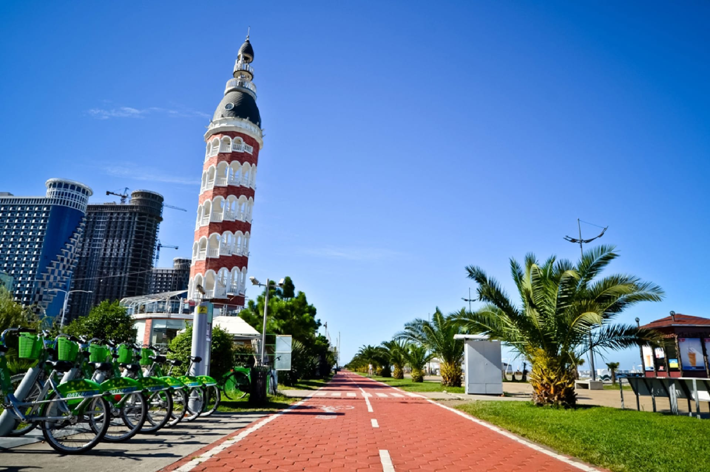
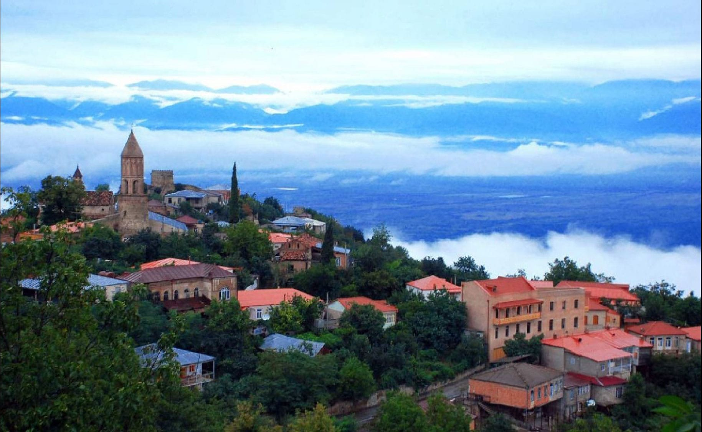
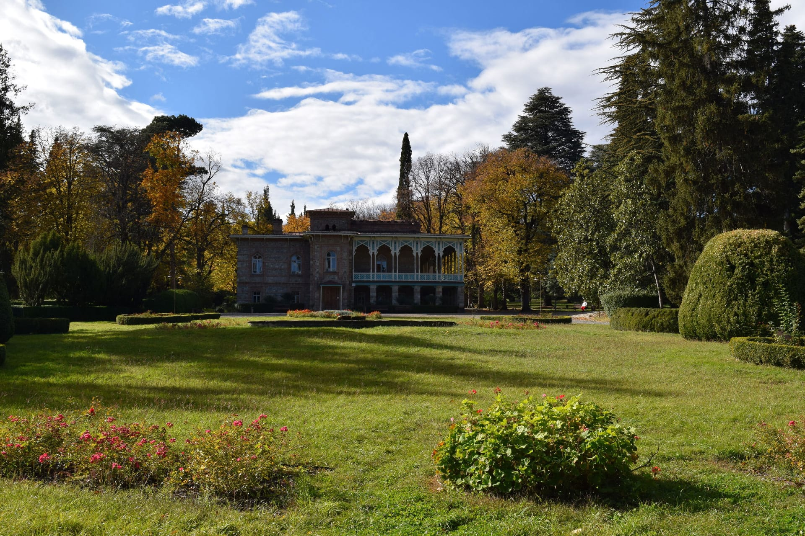
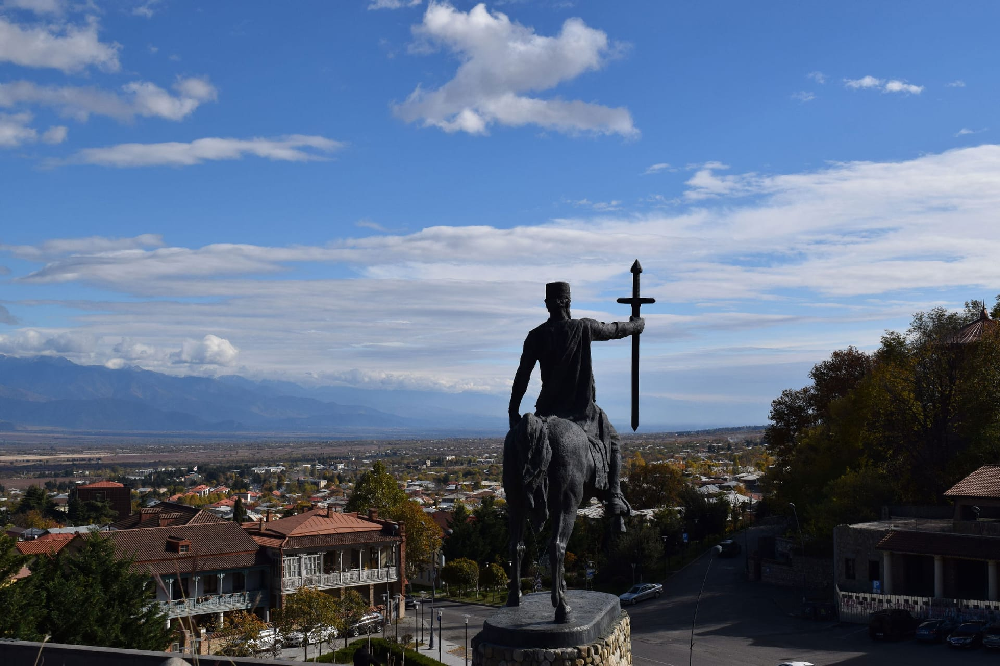
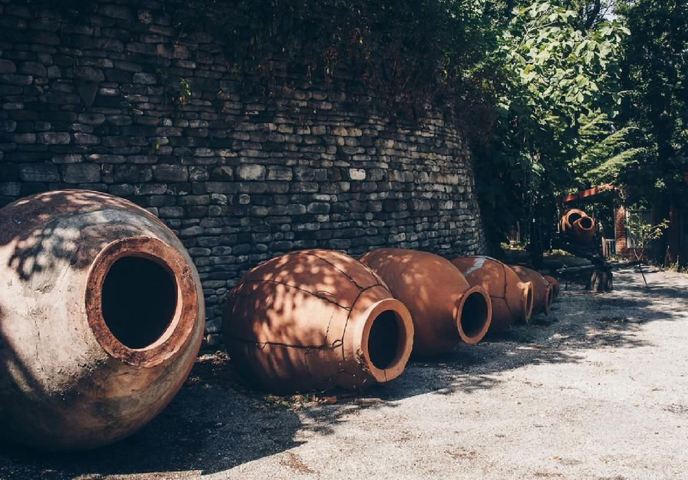
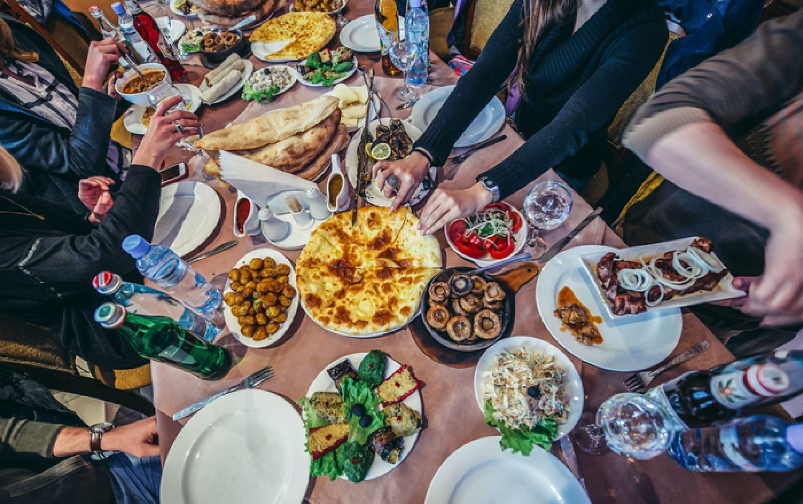
Book This Tour
Ready to experience Georgia? Fill out the form below to inquire about this tour.